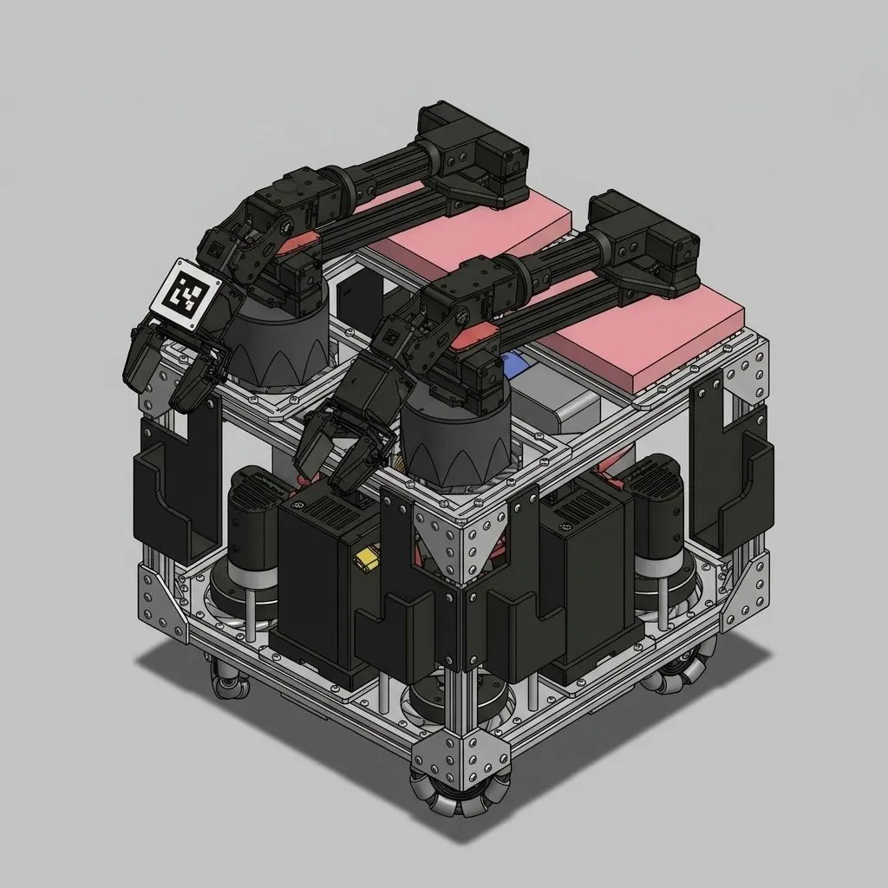
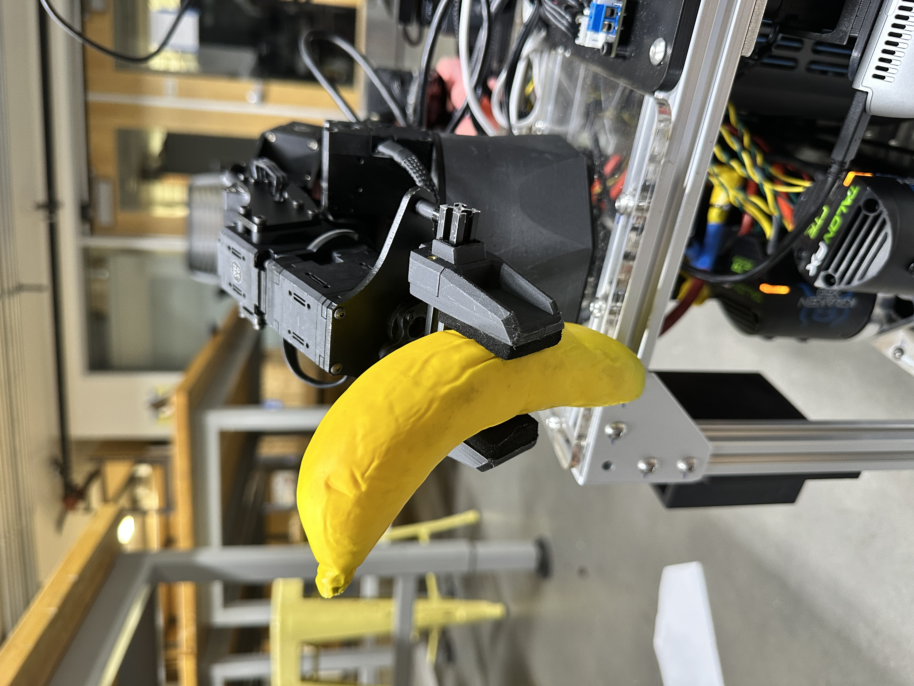
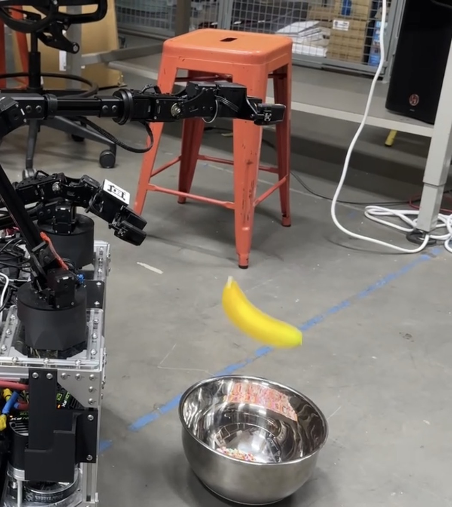
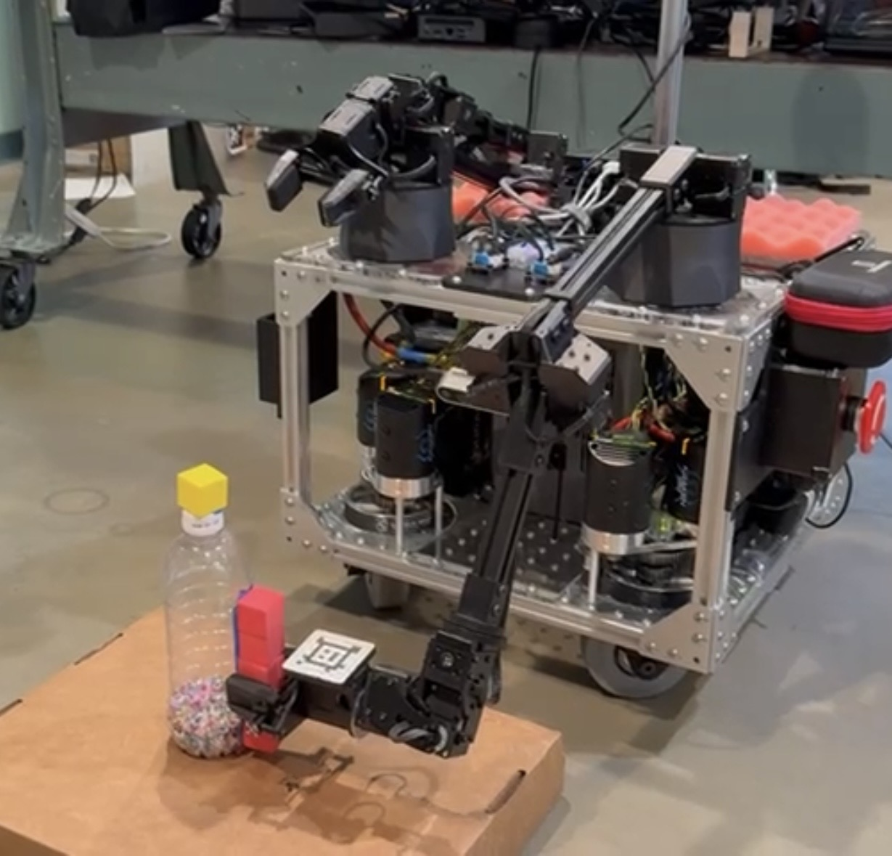
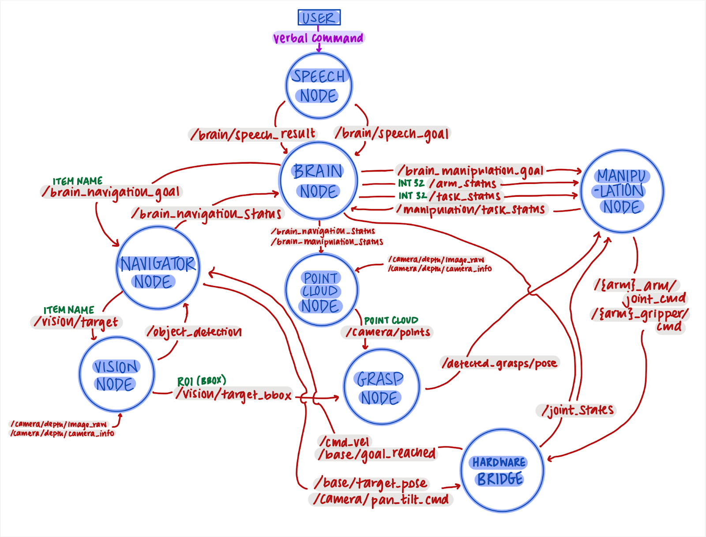
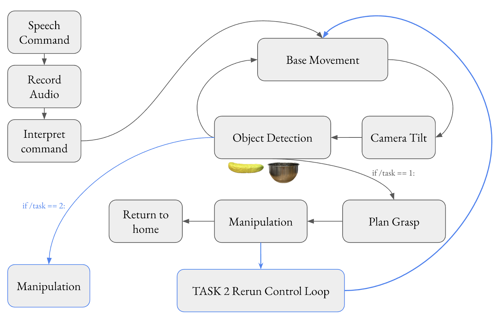
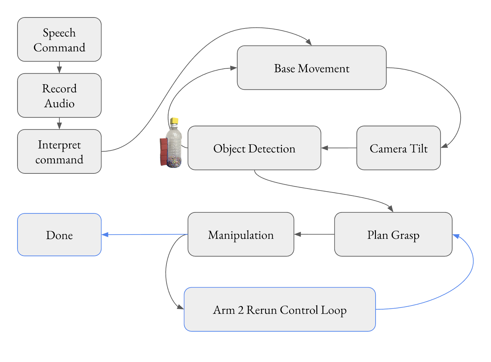

ME 326 · Stanford University · Winter 2026
Speech Enabled Autonomous Liquid-handler
A voice-commanded mobile robot built on the bimanual TidyBot++ platform. S.E.A.L. listens for natural language commands, navigates to target objects using a YOLO + Gemini vision pipeline, and manipulates them — retrieving items, placing them in containers, and pouring liquids.

Operations
Each task builds on the last, layering speech, vision, navigation, and manipulation into an increasingly complex collaborative pipeline. Click any card to watch the demo.
S.E.A.L. receives a spoken command, scans the environment by rotating in place, visually servos toward the target, computes a grasp pose from the bounding box and point cloud, grasps the object, and returns to start.

Extends Task 1 with a second navigation leg: after retrieving the object, the robot identifies a verbally-specified destination container, navigates toward it via visual servo, and deposits the payload inside.

The team's self-designed challenge. S.E.A.L. locates a bottle via Gemini vision, executes a side-grasp, and lifts it to a stowed pose using a two-arm control loop — laying the groundwork for a full pour sequence.

Architecture

ROS 2 node graph — Brain Node orchestrates all subsystems via pub/sub topics
Control Flow
Tasks 1 & 2
Both tasks share a core loop: speech command → object detection via rotating scan → visual servo approach → grasp planning → manipulation. Task 2 adds a second navigation-and-deposit cycle after the initial retrieval, re-running the control loop to locate the destination container and place the payload inside.

Task 3
The self-designed liquid pouring challenge adds a two-arm manipulation sequence: the first arm executes a side-grasp to secure the bottle, while the second arm performs a top-down grasp of the cap to unscrew it. The first arm then tilts the bottle to pour out the contents.

S.E.A.L. Team 6 · ME 326
The team site includes demo videos, detailed methodology, our software development writeup, and individual team member bios. Built on Google Sites as part of the ME 326 Collaborative Robotics course portfolio requirement.